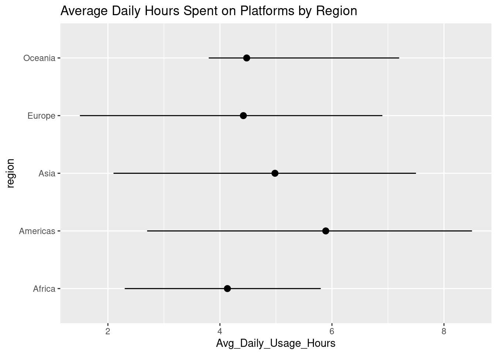

#install.packages("ggplot2")
library(ggplot2)
library(tidyverse)── Attaching core tidyverse packages ──────────────────────── tidyverse 2.0.0 ──
✔ dplyr 1.1.4 ✔ readr 2.1.5
✔ forcats 1.0.0 ✔ stringr 1.5.1
✔ lubridate 1.9.4 ✔ tibble 3.3.0
✔ purrr 1.1.0 ✔ tidyr 1.3.1
── Conflicts ────────────────────────────────────────── tidyverse_conflicts() ──
✖ dplyr::filter() masks stats::filter()
✖ dplyr::lag() masks stats::lag()
ℹ Use the conflicted package (<http://conflicted.r-lib.org/>) to force all conflicts to become errorsstudents_social_media_addiction <- read.csv("Students Social Media Addiction.csv")
region_mapping <- read.csv("all.csv")
students_social_media_addiction$Country <- gsub(
"USA",
"United States of America",
students_social_media_addiction$Country
)
students_social_media_addiction$Country <- gsub(
"UK",
"United Kingdom of Great Britain and Northern Ireland",
students_social_media_addiction$Country
)
students_social_media_addiction$Country <- gsub(
"South Korea",
"Korea, Democratic People's Republic of",
students_social_media_addiction$Country
)
students_social_media_addiction$Country <- gsub(
"Russia",
"Russian Federation",
students_social_media_addiction$Country
)
students_social_media_addiction$Country <- gsub(
"Netherlands",
"Netherlands, Kingdom of the",
students_social_media_addiction$Country
)
students_social_media_addiction$Country <- gsub(
"Vietnam",
"Viet Nam",
students_social_media_addiction$Country
)
students_social_media_addiction$region <-
region_mapping[
match(students_social_media_addiction$Country, region_mapping$name),
"region"
]
students_social_media_addiction <- students_social_media_addiction |>
filter(!is.na(region))
ggplot(students_social_media_addiction) +
stat_summary(
aes(x = Avg_Daily_Usage_Hours, y = region),
fun.min = min,
fun.max = max,
fun = mean
) + labs(
title = "Average Daily Hours Spent on Platforms by Region"
)
# ggsave(filename = "avg_hrs_spent_by_region.png")